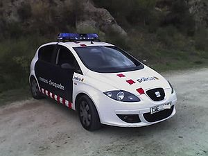
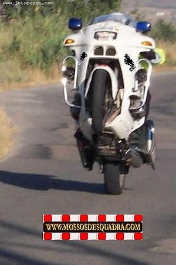
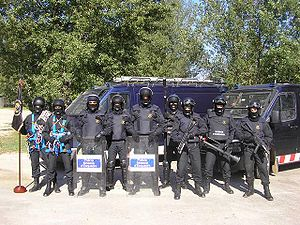
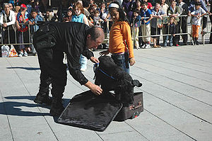
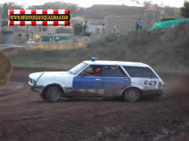
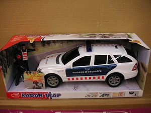

Mossos d'Esquadra
 De: La Frikipedia, la enciclopedia extremadamente seria.
De: La Frikipedia, la enciclopedia extremadamente seria.
| De la serie monstruos mitológicos:
|
| Mossos d’esquadra
|
|
|
| Pero que bonita pareja hacen
|
|
| Nombre Científico
|
Cabronus maximus
|
| Hábitat
|
Catalunya
|
| Organización
|
Normalmente en grupos de 2
|
| Actividad
|
A cualquier hora
|
| Dieta
|
Conductores y gente de bien
|
| Inteligencia
|
Dicen tener aunque no está demostrado
|
| Aparición
|
Más de las deseadas
|
| Número aproximado
|
Un huevo
|
| Armadura
|
Una placa que les hace ser inmortales
|
| Ataques
|
Poner multas a destajo, aporrear manifestantes y detenerte al que se cruce en su camino
|
| Moral
|
Muy alta ya que se creen intocables
|
| Notas
|
Azul marino y alguna franja roja
|
 Como se nota que la fábrica S.E.A.T. (Solo España Admite Trastos) está en Catalunya, la
pela es la
pela.
 Si tu haces esto pierdes 6 puntos, él no, él es Mosso d’Esquadra.
 Unos cuantos mossos de la división de “Brigadas Móviles” que se van de parranda.
 Me debes los 30€ que me costo la maría, perro
cabrón, que por tu culpa me la requisaron.
 ¿Carlos Sainz se ha metido a Mosso?.
 Queridos
Reyes Magos este año me he portado muy bien por eso quiero un coche de los Mossos d’Esquadra con su radar de velocidad para poner multas a destajo.
Los Mossos d’Esquadra (o también conocidos como Cabrones chupa Cabras) son la Policía Autonómica de Catalunya, los cuales son respetados y queridos por todos los catalanes aplicándoles nombres tan cariñosos y entrañables como Mozos de Cuadra, Gossos (perros en catalán) d’esquadra o “Los malos”, por poner algunos ejemplos. Son la versión catalana de la Guardia Civil lo que en vez de ir vestidos de verde van de azul cosa que hace que Movistar esté pensando en patrocinarlos.
Su misión
Según "La Generalitat" su función es la de garantizar la seguridad y el civismo en Catalunya, pero la realidad es otra, los Mossos son un ejército paramilitar entrenado en campos clandestinos de Afganistán para obedecer fielmente las órdenes del "President" el cual quiere dominar el mundo para llevar la cultura catalana hasta los rincones más escondidos del planeta como la selva virgen del Amazonas, Guam o Piera.
Como reconocerlos
Reconocerlos es fácil pues van de azul marino con una gorra o una boina a elegir según la moda primavera/verano de “El Corte Inglés”. Entre sus articulo de “trabajo” llevan una pistola (de juguete para acojonar), una porra y un consolador anal punzón.
Para desplazarse lo hacen en los modelos Altea/Toledo de S.E.A.T. (Solo España Admite Trastos) o algún otro del grupo VW como los Passat, mientras que de furgonetas son las de Mercedes-Benz las elegidas.
¿Como actúan?
Independientemente de que sean de la unidad de tráfico o no, su forma de actuar es la misma, siempre con prepotencia, buenos modales y corrección, motivos por los que son tan queridos entre la gente de a pie.
Ellos siempre te hablarán en catalán, por algo son la autoridad catalana, por lo que si no sabes hablarlo aquí tienes algunas palabras y frases que te pueden venir bien para responder a sus típicas preguntas.
- “Hola”: “Hola” (esta no es muy difícil)
- “Buenas noches”: “Cambrer, una altra copeta de whisky”
- “Déme un segundo que encuentre los papeles del coche”: “No se on collons són els papers d'aquest fotut cotxe”.
- “No señor agente, esta marihuana no es mía”: “No cabró aquesta marihuana és meva, no te la quedis”.
- “Déjeme que le explique”: “Ens fumem un canut i aquí no ha passat res”.
- “Adiós”: “Que et fotin pel cul”.
- “¿Qué va a hacerme con ese punzón? Ahhhhhhh”: “Què vol fer-me amb aquest consolador anal? Ahhhhhhh”.
- “No me haga daño”: “Hi està gratis o em cobrarà?”
- “Quiero un abogado”: “En vull un advocat”. (Esta es la que te hara más falta)
¿Donde están?
Los mossos siempre están atentos ante cualquier cosa que perturbe la armonía de la zona que vigilan por los que siempre reinará la paz donde estén ellos. Si ves que siempre están con el coche aparcado de cualquier manera y ellos están en un bar, no te extrañes, son minicomisarías clandestinas, por eso se pasan en ellas más del 85 % de su jornada laboral.
Divisiones
Hay muchas divisiones dentro de este magnifico cuerpo pero como me da perrería es muy complicado explicar todas solo diré las que me salen de los huevos unas cuantas:
- Área Regional de Tráfico: Son los que se encargan de ponerte multas de circulación y siempre los verás con la mirada perdida dando vueltas sin hacer nada con el coche. Sus ganas de trabajar son inversamente proporcionales al delito que se cometa, a más grave menos ganas de currar.
- Área de Escoltas: Son la guardia personal del “President”.
- Brigada Móvil: Estos son los que acuden a las manifestaciones a poner “orden” y hacer que
la sangre fluya todo esté en calma. Para estar en esta unidad has de ser el más loco cuerdo y sereno de cuerpo
- Grupo Especial de intervención de alto riesgo: si tu gatito se sube a un árbol y no se atreve a bajar, ellos te ayudarán.
- Unidad Canina: y luego dicen que los perros son el mejor amigo del hombre, tú los acaricias y ellos descubren donde escondes la maría y el costo.
- Policía Científica: Los CSI catalanes o mejor dicho “el CSI catalán” ya que sus potingues son muy raros y solo hay para uno que la pela es la pela
- Unidad de Delitos Informáticos: Son los que se encargan de bajar películas, música y vídeos porno de Emule y Ares para todo el cuerpo.
¿Sabias que…
- ...si te registran y te encuentran costo, se lo fumarán ellos?
- ...a la marihuana tampoco le hacen asco y también se la fumarán?
- ...siempre que les necesites (por algún extraño motivo) debes acudir
a algún bar a tu comisaría más cercana?
- ...Guam es un país del pacifico?
- ...y que por ley está prohibido que las vírgenes se casen?
- ...que hay hombres cuyo trabajo es desflorar a las vírgenes para que se puedan casar?
- ...y que cobran por ello?
- ...ahora mismo tienes envidia de esos cabrones y te quieres ir a vivir a Guam?
- ...tampoco sabes donde
coño está Piera pero después de saber lo de Guam te importa una mierda otro año lo averiguarás.
- ...por escribir este artículo me pueden caer 30 años y un día si me pillan los mossos?
- ...este cuerpo policial fue fundado por Yoda Puyol en la edad media?
- ...durante la dictadura se llamaban los "mozos de cuadra"
Enlaces Externos
¿los mozos de esquadrilla saben hasta cuando te vas a mear?
P.D.
|
|
Este usuario ama y aprecia a los mossos
|
Nueva campaña: “Pon un Mosso en tu vida”, coloca este Frikibox en tu página de usuario y apadrina un Mosso d’Esquadra. Ellos te lo agradecerán con una gran sonrisa pero tranquilo que las multas que te pongan no te las quitará ni Dios, recuerda que si hay pelas de por medio…
Véase también
Autor(es):
- Krusher
- Roms
- Koken
- Guilfer
- Nemesis
- Mierdashi
- Urahara-kun
- Bladguer
- Reports iscariot
- Seint
Frikipedia 2005-2016, Licencia
GFDL 1.2 - Extraído por FrikiLeaks